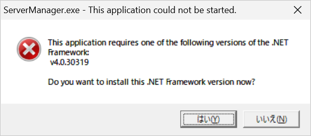

こんにちは、Japan Developer Support Core チームの松井/上原です。今回は .NET Framework の修復方法について解説します。
概要
.NET Framework は Windows の OS バージョンによって構成が異なります。 そのため、.NET Framework の破損が疑われる状況では、OS バージョンにより修復に必要なツールや手順が異なりますので注意が必要です。
- Windows 8 および Windows Server 2012 以降のバージョン
- Windows 7 SP1 および Windows Server 2008 R2 SP1 以前のバージョン
なお、.NET Framework の破損が疑われる一般的なケースとして、.NET Framework アプリケーションが起動できないといったトラブルがあります。 このようなトラブルの場合、.NET Framework の破損以外の要因で問題が発生している可能性もあるため、本ブログ記事の後半では、.NET Framework アプリケーションが起動できない場合の一般的なトラブルシューティングについても解説いたします。
Windows 8 および Windows Server 2012 以降のバージョンでの修復
Windows 8 および Windows Server 2012 以降の OS バージョンでは、コンポーネントベースのサービス スタック (Component-based Servicing: CBS) と呼ばれる OS の仕組みにより .NET Framework の構成が管理されています。 そのため、.NET Framework の破損が疑われる場合には、 Windows の修復手順 の手順に沿って修復をお試しください。
Windows 7 および Windows Server 2008 R2 SP1 以前のバージョンでの修復
Windows 7 および Windows Server 2008 R2 SP1 以前のバージョンでは、.NET Framework は Windows Installer によって追加されるソフトウェアとして構成されています。 そのため、これらの OS バージョンにおいて .NET Framework の破損が疑われる場合には、Windows Installer の仕組みに基づいて修復を試みる .NET Framework の修復ツール にて修復をお試しください。
なお、.NET Framework の修復ツールの ドキュメント [影響を受ける構成] の項に記載されているとおり、主に Windows 7 SP1 および Windows Server 2008 R2 SP1 以前の Windows のバージョンにおける問題を解決するための機能を提供しています。 このため、Windows 8 および Windows Server 2012 以降のバージョンでは、.NET Framework の修復ツールによる効果は期待できませんので、ご注意ください。
.NET Framework アプリケーションが起動できない場合のトラブルシューティング
.NET Framework アプリケーションが起動できない場合の原因は多岐にわたりますが、修復は比較的簡単に試すことができるため、トラブルシューティングの過程で試してみる価値はあります。ただし、アプリケーションの起動で問題が起きている場合、原因は .NET Framework の破損に限らず、アプリケーション起動時の処理で例外が発生している場合や、ウィルス対策ソフトウェアの影響を受けている場合もあります。 そのため、修復とあわせて、Application のイベント ログやアプリケーションの処理で記録されているログ ファイルの確認、ウィルス対策ソフトウェアの一時的な無効化などもお試しください。
また、適切なバージョンの .NET Framework がインストールされているにも関わらず、下図のようにインストールを促すダイアログが表示される場合があります。

一部のコンピューターだけで問題が起きている場合は、アプリケーション構成ファイルの設定や下記のレジストリに記録されている .NET Framework の構成を比較し、もし差異がある場合は正常に動作するコンピューターの構成にあわせることで問題が解消する可能性があります。
1 | \HKEY_LOCAL_MACHINE\SOFTWARE\Microsoft\.NETFramework\v4.0.30319\SKUs |
本ブログの内容は弊社の公式見解として保証されるものではなく、開発・運用時の参考情報としてご活用いただくことを目的としています。もし公式な見解が必要な場合は、弊社ドキュメント (https://learn.microsoft.com や https://support.microsoft.com) をご参照いただくか、もしくは私共サポートまでお問い合わせください。